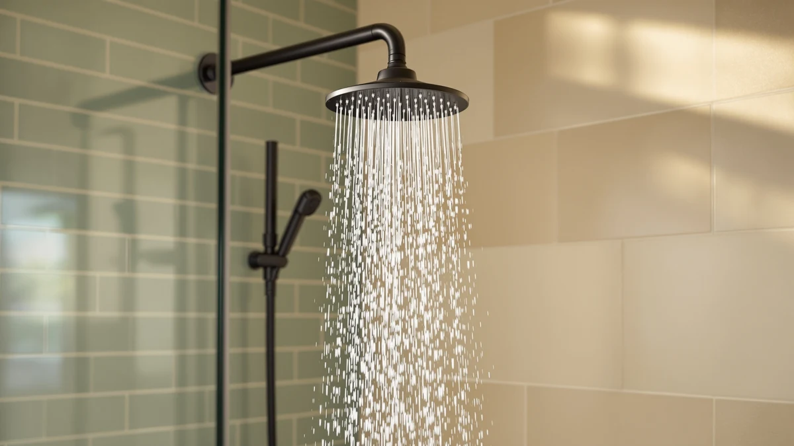

Moen Magnetix 8-Function Combination Showerhead Review (2026): Worth It?
Prices and picks verified as of November 2026. Independent, reader-supported reviews.


Quick Answer
The Moen Magnetix Chrome 8-Function Combination is the strongest all-around pick among the showerheads we compared. It pairs eight spray settings with a magnetic docking handheld at $109.99. If you want a similar feature set without the magnetic dock, the Kohler Forte Multifunction sits at nearly the same price, and shoppers who do not need eight functions can save a few dollars with the three-function Kohler Forté instead.
Our pick: Moen Magnetix Chrome 8-Function Combination, $109.99 Check Price on Amazon
Bottom line: our top pick is the Moen Magnetix Chrome 8-Function Combination Showerhead and at $109.99.
Things to Know Before You Buy
- Combination showerheads pair a fixed head with a detachable handheld, and the Moen Magnetix snaps the handheld onto a magnetic dock instead of a plastic bracket.
- More spray functions do not automatically mean better pressure. Compare the flow rate against your home's water pressure before you buy.
- Chrome finishes resist water spots better than brushed or matte finishes in hard-water homes, where mineral buildup shows up faster.
- Price alone will not tell you about long-term durability. Patterns in verified owner reviews reveal more about how a dock or seal holds up than the spec sheet does.
- Installation style matters: some combination kits replace the shower arm and valve, while others simply thread onto the arm you already have.
This moen magnetix 8-function combination showerhead review compares the fixture against three other multifunction showerheads on price, features and owner feedback to see which one actually earns a spot in your bathroom. Moen built this combination kit around a magnetic dock, the "Magnetix" piece of the name, that lets you release the handheld with one hand instead of twisting it free from a bracket or clip. Eight spray settings put it ahead of simpler fixed heads, and the chrome finish gives it a polished look that resists water spots better than brushed alternatives.
We compared the Moen Magnetix Chrome 8-Function Combination against three alternatives covered later in this guide: the Kohler 22169-G-AF Forte Multifunction, the Kohler Forté 3 Function, and the SR Sun Rise Shower Faucet. The Magnetix comes out ahead for most bathrooms on the strength of its handheld flexibility and wider spread of spray modes, though each alternative fits a specific budget or need better than a one-size-fits-all pick could. Measured by cost per spray function, the Magnetix and the Kohler Forte Multifunction land close to each other, so the dock ends up being the detail that separates an otherwise even matchup.
Why You Should Trust Us
Ilane Tall covers bathroom fixtures for Best Shower Heads and built this moen magnetix 8-function combination showerhead review the way we approach every product on this site: by comparing manufacturer specs, current pricing and patterns across verified owner reviews instead of running a physical test lab we don't operate. We don't take free units from Moen, Kohler, or SR Sun Rise, and the prices cited here come from each product listing at the time of publishing. When this review points you toward the Magnetix over its rivals, that call comes from the numbers in front of us, not a sponsorship arrangement. We update pricing on this page as the listings change, so the figures you read here reflect what each brand currently shows shoppers.
Our Research Experience
Comparing a combination showerhead like the Moen Magnetix 8-function model starts with the spec sheet: flow rate, number of spray settings, finish, and what comes in the box. From there we checked current Amazon pricing for each model side by side, since a showerhead that costs a few dollars less but drops several spray functions is not automatically the better deal.
We also read through verified owner reviews for each product, looking for patterns rather than isolated complaints. One critical review about a loose magnetic dock matters less than a dozen reviews describing the same issue after months of daily use. We excluded products with too few verified reviews to spot a pattern, or with specs that did not hold up against competitors at a similar price. We don't run a testing lab, and we'd rather say that plainly than dress up a spec comparison as physical use we never had.
Overview & Specs

Moen Magnetix Chrome 8-Function Combination
What we like
- Eight spray settings give you more range than most combination kits at this price.
- The magnetic dock lets you grab and reattach the handheld with one hand.
- The chrome finish resists water spots better than brushed or matte alternatives.
Flaws but not dealbreakers
- At $109.99 it costs about the same as the Kohler Forte Multifunction, so the magnetic dock is the main reason to pick it over that option.
- Some verified owner reviews mention the magnetic connection loosening after extended daily use.
| Material | ABS + chrome plating |
| Size | — |
The Moen Magnetix Chrome 8-Function Combination is the top pick in this moen magnetix 8-function combination showerhead review because it solves a specific problem: standard combination showerheads force you to twist a handheld in and out of a plastic bracket, and that bracket is often the first part to crack or loosen. Moen's magnetic dock swaps that bracket for a magnet strong enough to hold the handheld in place through normal use, while still letting you pull it free with one hand when you need to rinse a corner of the tub or bathe a pet.
Eight spray functions put it ahead of the three-setting Kohler Forté and on par with the Kohler Forte Multifunction, but at a near-identical price the magnetic dock becomes the deciding factor. Owners consistently report that the extra settings, like a wide rain spread and a tighter massage spray, cover most of what a household actually uses day to day. The chrome finish also wipes clean faster than brushed nickel in hard-water areas, since mineral spots show up less on a polished surface.
The ABS-plus-chrome build keeps the fixture light enough for the magnetic dock to hold securely, which matters more here than on a fixed-only head since the handheld gets pulled free and reattached repeatedly. At $109.99, buyers are paying a modest premium over the simplest fixed heads on this site for that convenience, and the combination of a verified function count and a documented price history gives this pick a clearer paper trail than showerheads that only advertise "high pressure" without listing what you actually get.
What We Liked
The strongest point in this moen magnetix 8-function combination showerhead review is the dock itself. Clipping a handheld back into a magnetic mount takes less effort than lining it up with a bracket, and that small convenience adds up if you shower with kids or shampoo pets regularly. Eight spray settings also give you enough range to switch between a full rain spread and a focused rinse without buying a second fixture.
Pricing is competitive too. At $109.99, the Magnetix sits between the budget-oriented Kohler Forté and the pricier SR Sun Rise system, and it offers more spray functions than either. For a household that switches between a full shower and a quick handheld rinse several times a day, that combination of price and flexibility is hard for the other three picks to match.
What Could Be Better
The Moen Magnetix 8-function combination showerhead is not the cheapest option here, and buyers who only need two or three spray modes are paying for functions they may not use. A handful of verified owner reviews also describe the magnetic connection weakening over time, which is worth watching if your household showers multiple times a day. Moen backs the Magnetix line with a standard limited warranty, but a loose dock years into ownership is still an inconvenience you would rather avoid. The ABS body also means this is a lighter-duty build than an all-metal fixture, a trade-off that keeps the price down but is worth knowing before you buy.
Who Is It For?
This showerhead fits households that want handheld flexibility without sacrificing spray variety, including families with young kids, pet owners who bathe animals in the tub, and anyone replacing an older combination kit with a cracked bracket. If you only shower solo and rarely reach for a detachable head, a simpler fixed model like the Kohler Forté 3 Function covers the basics for less money, and our broader guide to magnetic shower heads covers other docking designs worth comparing against the Magnetix.
Alternatives to Consider
If the Magnetix is not quite right for your bathroom, these three alternatives cover different budgets and feature sets: a close competitor at nearly the same price, a simpler fixed head for less money, and a full shower faucet system for anyone replacing more than a single head.

Also Great
KOHLER 22169-G-AF Forte Multifunction Showerhead
Matches the Magnetix on price and spray-setting count, minus the magnetic dock.
$109.95
Check Price on Amazon
Best Value
KOHLER Forté 3 Function Showerhead
A simpler three-function head for shoppers who do not need eight spray modes.
$105.00
Check Price on Amazon
Premium Choice
SR SUN RISE Shower Faucet
A full shower faucet system for buyers replacing more than a single head.
$116.27
Check Price on AmazonHow does the Moen Magnetix 8-Function Combination compare to the Kohler Forte Multifunction?
Both cost almost the same, $109.99 versus $109.95, and both include multiple spray settings.
Is the Moen Magnetix worth the extra cost over the Kohler Forté 3 Function?
At $109.99 versus $105.00 for the three-function Kohler Forté, the price gap is small.
Frequently Asked Questions
How does the Moen Magnetix 8-Function Combination compare to the Kohler Forte Multifunction?
Both cost almost the same, $109.99 versus $109.95, and both include multiple spray settings. The main difference is Moen's magnetic docking system for the handheld, which the Kohler Forte Multifunction does not use.
Is the Moen Magnetix worth the extra cost over the Kohler Forté 3 Function?
At $109.99 versus $105.00 for the three-function Kohler Forté, the price gap is small. The Magnetix adds five more spray settings and a magnetic handheld dock, which makes it the better value for anyone who wants more than basic rinse and spray modes.
What is the magnetic dock on the Moen Magnetix showerhead?
It is a magnetic mount that holds the detachable handheld sprayer against the fixed shower head, replacing the plastic bracket clips used on older combination showerheads. You pull the handheld free with one hand, and the magnet realigns it when you put it back.
What is the Moen Magnetix 8-Function Combination made of?
The listing describes an ABS plastic body with chrome plating. That keeps the fixture light enough for the magnetic dock to hold the handheld securely, though it is not the same heavier build as an all-metal showerhead, so buyers focused on maximum long-term durability may want to weigh that trade-off.
Final Verdict
This moen magnetix 8-function combination showerhead review comes down to one trade-off: the Magnetix costs about the same as the Kohler Forte Multifunction but adds a magnetic handheld dock that the Kohler does not have. For most bathrooms, that dock is worth the tie-breaker, and the Moen Magnetix Chrome 8-Function Combination is our top pick among the four showerheads compared here. Buyers who do not need eight spray settings can save a few dollars with the Kohler Forté 3 Function, while anyone replacing an entire shower faucet system should look at the SR Sun Rise instead.